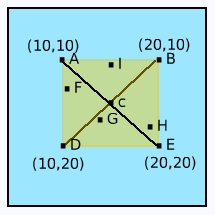

Let's work on our bugs. Click on the first failing unit test and open up the debugger.
We're testing a point at 20@10 for a CellClickRegionInside and expected to see CellClickRegionPushWest as the answer but instead received CellClickRegionPushSouth. This could just be a bug in the unit test.
When we tested our inside click region logic earlier in our design we used a table like this to check results. The version of the table below is how it looks after we corrected errors we found long ago in our test design.
|  |
|
The trouble is of course that our cells are bigger now. We now have a cell that's 40 x 40 instead of 30 x 30. With an "inside" region that's 10 pixels from the edges, the new table dimensions should be as follows.
|
Change the unit test accordingly and re-run.
testClicksInPushRegions
| pt regionClass pushRegion testTable cls |
pt := 11@11.
regionClass := CellClickRegion clickRegionForPoint: pt.
self should: [regionClass = CellClickRegionInside].
testTable := {
10@10->CellClickRegionPushEast.
30@10->CellClickRegionPushWest.
20@20->CellClickRegionPushNorth.
10@30->CellClickRegionPushNorth.
30@30->CellClickRegionPushNorth.
11@13->CellClickRegionPushEast.
19@21->CellClickRegionPushNorth.
29@27->CellClickRegionPushWest.
20@1->CellClickRegionPushSouth
}.
testTable do: [:assoc |
pt := assoc key.
cls := assoc value.
pushRegion := regionClass pushRegionForPoint: pt.
self should: [pushRegion = cls]]